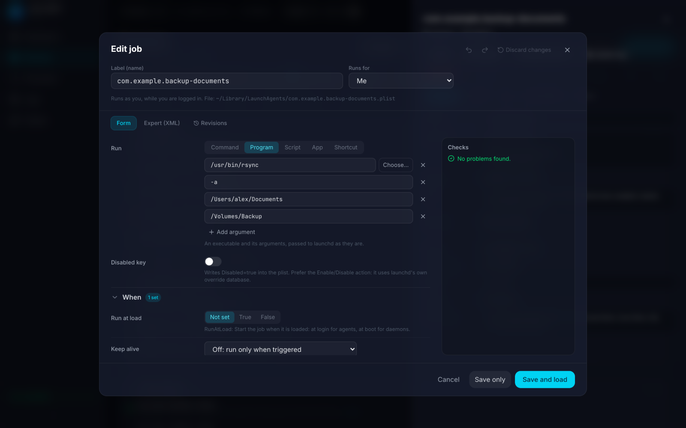
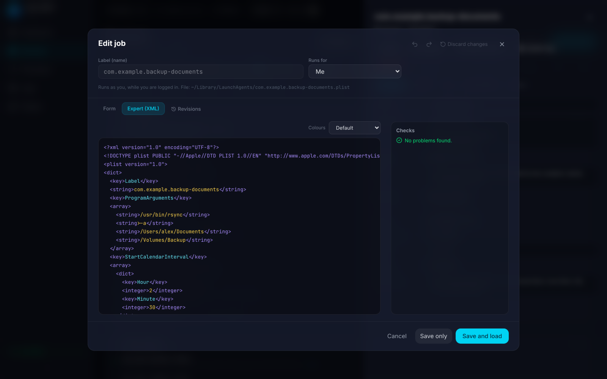

Job editor
A form for every documented launchd.plist key, with an Expert mode when you need the raw XML.
- A field for every documented
launchd.plistkey: command, script, app or Shortcut to run, run-at-load and keep-alive conditions, interval and calendar schedules, watch paths, environment, output files, user and resource limits. - Expert mode shows the raw XML with syntax colours, four editor themes, parse errors with line numbers, and find and replace.
- Checks run before you save: missing executables, a tilde in a path, keys that only apply to daemons, and schedules launchd would ignore.
- Templates, duplicate, delete to the Trash with a backup, and show in Finder.
- Revisions keep the newest 20 backups per job, with revert.
- Drafts save your unsaved edits and survive closing the editor.
- Undo and redo cover the whole editor, plus a one-click "Discard changes."

